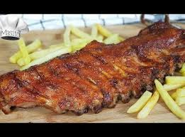

1-¿Cuál es la etiqueta principal utilizada para crear una tabla en HTML?
la etiqueta pricipal para crear una tabla es la etiqueta "table"
2-¿Qué etiqueta se utiliza para definir una fila en una tabla?
la etiqueta para definir una fila en una tabla es la etiqueta "tr"
3-¿Cuál es la etiqueta utilizada para crear una celda de encabezado en una tabla?
la etiqueta utilizada para crear una celda de encabezado es la etiqueta "th"
4-¿Cuál es la etiqueta utilizada para crear una celda de datos en una tabla?
la etiqueta utilizada para crear una celda de datos es la etiqueta "td"
5-¿Qué atributo se utiliza para especificar cuántas columnas debe abarcar una celda?
el atributo utilizado para especificar cuántas columnas va a abarcar una celda es "colspan"
6-¿Qué atributo se utiliza para especificar cuántas filas debe abarcar una celda?
el atributo que se utiliza para especificar cuántas filas va a abarcar una celda es el atributo "rowspan"
7-Si necesitamos crear una tabla con 10 filas ¿qué etiqueta y cuántas veces se debe utilizar para definir las filas?
primero vamos a utilizar la etiqueta "table" para armar la tabla. dentro de esta vamos a utilizar 10 "tr" para crear y definir las filas
practicas
👉 TABLA 1
| nombre | calorias | tipo | imagen |
| banana | 91 kcal | fruta | |
| costillar | 296 kcal | carne |  |
| yogurt danonino | 45 kcal | lacteo | |
| acelga | 19 kcal 100g | verdura | |
| gomitas de eucalipto | 62 kcal |